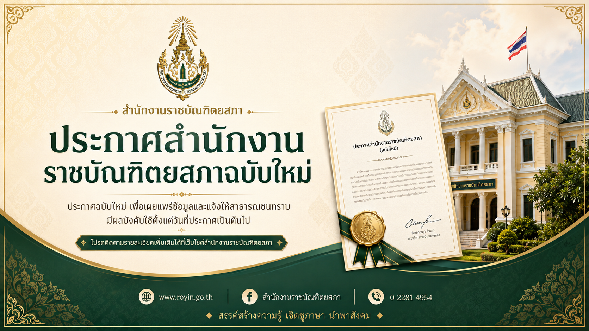

เชื่อถือได้
ข้อมูลจากแหล่งวิชาการที่ผ่านการตรวจสอบ
แหล่งรวมองค์ความรู้ มาตรฐานภาษาไทย และข้อมูลวิชาการ ค้นหาได้จากจุดเดียว ใช้งานง่าย และเข้าถึงได้สำหรับทุกคน
แสดงผลลัพธ์ที่เกี่ยวข้องมากที่สุดจากพจนานุกรม ศัพท์บัญญัติ บทความ หนังสือ วารสาร เอกสาร และบริการประชาชน
ลองใช้คำค้นที่กว้างขึ้น เช่น “ภาษาไทย”, “พจนานุกรม”, “ศัพท์บัญญัติ” หรือ “สารานุกรม”
ข้อมูลจากแหล่งวิชาการที่ผ่านการตรวจสอบ
อ้างอิงด้านภาษาและวิชาการของประเทศ
ออกแบบเพื่อประชาชนทุกกลุ่มและทุกอุปกรณ์
รองรับผู้สูงอายุ ผู้พิการ และการใช้แป้นพิมพ์
เข้าถึงองค์ความรู้และบริการของราชบัณฑิตยสภาได้อย่างสะดวก
ค้นความหมายและการใช้คำตามมาตรฐานภาษาไทย
›ศัพท์เฉพาะทางและคำมาตรฐาน
›ระบบค้นหาข้อมูลวิชาการ เอกสาร และงานวิจัย
›มาตรฐานภาษาไทยและหลักเกณฑ์การใช้ภาษา
›ข่าวสารและประกาศจากสำนักงาน
›หนังสือ ตำรา และเอกสารวิชาการออนไลน์
›ฐานข้อมูลงานวิชาการและองค์ความรู้
›บทความ องค์ความรู้ และสื่อการเรียนรู้
›สื่อวิดีโอ สื่อเสียง และสื่อมัลติมีเดีย
›คำปรึกษา แบบฟอร์ม และการติดต่อราชการ
›รวมสารานุกรม อินโฟกราฟิก และสื่อมัลติมีเดีย เพื่อการเรียนรู้อย่างต่อเนื่อง
งานศึกษาด้านภาษาไทยและการใช้ภาษาในสังคมร่วมสมัย
บทวิเคราะห์และเอกสารอ้างอิงทางวิชาการ
ข้อมูลสนับสนุนการใช้ภาษาและวัฒนธรรมในระดับองค์กร
งานศึกษาด้านภาษาไทยและการใช้ภาษาในสังคมร่วมสมัย
บทวิเคราะห์และเอกสารอ้างอิงทางวิชาการ
ข้อมูลสนับสนุนการใช้ภาษาและวัฒนธรรมในระดับองค์กร
ติดตามข่าวสำคัญ ประกาศ กิจกรรม อบรม และกำหนดการของสำนักงานราชบัณฑิตยสภา
รายงานผลการดำเนินงาน ทิศทางการพัฒนาองค์กร และบทบาทของราชบัณฑิตยสภาในการสนับสนุนองค์ความรู้ของชาติ
อ่านต่อ →
ข่าวสารภารกิจ การประชุม และกิจกรรมด้านองค์ความรู้ของสำนักงานราชบัณฑิตยสภา
อ่านต่อ →ยกระดับการเข้าถึงพจนานุกรม ศัพท์บัญญัติ และองค์ความรู้ให้ประชาชนใช้งานง่ายขึ้น
อ่านต่อ →ประชาชนสามารถค้นหาข้อมูลภาษาไทยและเอกสารอ้างอิงจากระบบออนไลน์ได้สะดวกขึ้น
อ่านต่อ →รวบรวมบทความและสื่อความรู้เพื่อสนับสนุนการใช้ภาษาไทยอย่างถูกต้องในสังคมปัจจุบัน
อ่านต่อ →ศัพท์บัญญัติสาขาต่าง ๆ ที่ผ่านการพิจารณา พร้อมให้ค้นหาและใช้อ้างอิงผ่านระบบออนไลน์
อ่านต่อ →สรุปหลักเกณฑ์สำคัญพร้อมตัวอย่างคำที่มักเขียนผิด เพื่อการใช้ภาษาไทยอย่างถูกต้อง
อ่านต่อ →แนวทางการใช้ภาษาไทยที่ถูกต้อง ชัดเจน และเหมาะสมกับเอกสารราชการ พร้อมตัวอย่างการใช้งานจริง
อ่านต่อ →เรียนรู้รูปแบบหนังสือราชการ การใช้ถ้อยคำ และการเรียบเรียงข้อความอย่างเป็นทางการ
อ่านต่อ →ประเด็นการใช้คำร่วมสมัย คำทับศัพท์ และศัพท์บัญญัติในสื่อดิจิทัลและเอกสารสาธารณะ
อ่านต่อ →แนะนำการใช้พจนานุกรม ศัพท์บัญญัติ และวารสาร ผ่านระบบออนไลน์ของสำนักงาน
อ่านต่อ →ทำความเข้าใจหลักการใช้คำทับศัพท์และศัพท์บัญญัติให้เหมาะสมกับบริบทการสื่อสาร
อ่านต่อ →ฝึกจับใจความสำคัญและเรียบเรียงข้อความให้กระชับ ชัดเจน เหมาะกับงานเอกสาร
อ่านต่อ →แนะนำการอ่านคำ การดูความหมาย และการสืบค้นคำในพจนานุกรมออนไลน์
อ่านต่อ →กิจกรรมเสวนา นิทรรศการ และการเผยแพร่องค์ความรู้ด้านภาษาไทยสำหรับประชาชน นักเรียน และผู้สนใจ
ดูกำหนดการ →กิจกรรมเผยแพร่ความรู้ด้านภาษา วัฒนธรรม และการใช้ภาษาไทยในชีวิตประจำวัน
อ่านต่อ →นำเสนอองค์ความรู้ หนังสือ สิ่งพิมพ์ และสื่อดิจิทัลที่ประชาชนสามารถเข้าถึงได้
อ่านต่อ →แลกเปลี่ยนมุมมองเกี่ยวกับการใช้ภาษาไทยในสังคมสมัยใหม่และสื่อดิจิทัล
อ่านต่อ →ส่งเสริมการเรียนรู้ภาษาไทยผ่านกิจกรรมสร้างสรรค์สำหรับนักเรียนและเยาวชน
อ่านต่อ →เปิดเวทีให้นักเรียนและประชาชนร่วมแสดงฝีมือการใช้ภาษาไทยอย่างสร้างสรรค์
อ่านต่อ →แลกเปลี่ยนมุมมองว่าด้วยคุณค่าของวรรณคดีไทยกับการเรียนรู้ในปัจจุบัน
อ่านต่อ →ประกาศเผยแพร่พร้อมรายละเอียด เอกสารสำคัญ และข้อมูลประกอบสำหรับประชาชนและหน่วยงานที่เกี่ยวข้อง
อ่านต่อ →รายละเอียดประกาศ เอกสารแนบ คุณสมบัติ และกำหนดการที่เกี่ยวข้องกับการรับสมัคร
อ่านต่อ →เผยแพร่ประกาศ เอกสารประกอบ และรายละเอียดการดำเนินการตามระเบียบที่เกี่ยวข้อง
อ่านต่อ →ข้อมูลผลการพิจารณา เอกสารแนบ และรายละเอียดสำหรับผู้เกี่ยวข้อง
อ่านต่อ →ประกาศข่าวสารทั่วไป กำหนดการ และข้อมูลที่ประชาชนควรทราบ
อ่านต่อ →แนวทางสำหรับหน่วยงานในการใช้ถ้อยคำ การสะกดคำ และรูปแบบเอกสารที่ถูกต้อง
อ่านต่อ →ช่องทางการติดต่อและการให้บริการออนไลน์ระหว่างวันหยุดทำการของสำนักงาน
อ่านต่อ →เลือกบริการที่ต้องการ ยื่นคำขอ และติดตามสถานะได้อย่างชัดเจน
ส่งคำถามเกี่ยวกับภาษาไทย คำศัพท์ มาตรฐานภาษา และองค์ความรู้ของราชบัณฑิตยสภา
ยื่นคำขอใช้เนื้อหา หนังสือ สิ่งพิมพ์ หรือเอกสารของสำนักงาน พร้อมเอกสารประกอบ
แจ้งปัญหาการใช้บริการ ข้อเสนอแนะ หรือเรื่องที่ต้องการให้สำนักงานพิจารณา
ร่วมประเมินเว็บไซต์ บริการ และช่องทางการเข้าถึงข้อมูล เพื่อพัฒนาบริการให้ดีขึ้น
เชื่อมโยงแหล่งข้อมูลและระบบสารสนเทศที่สนับสนุนองค์ความรู้ของชาติ
คำตอบสั้น ๆ สำหรับการเริ่มใช้งานเว็บไซต์และบริการสำคัญ พร้อมกำหนดการกิจกรรมที่กำลังจะมาถึง
เลือกประเภทเรื่อง กรอกข้อมูลติดต่อ แล้วเจ้าหน้าที่จะติดต่อกลับตามช่องทางที่ระบุ